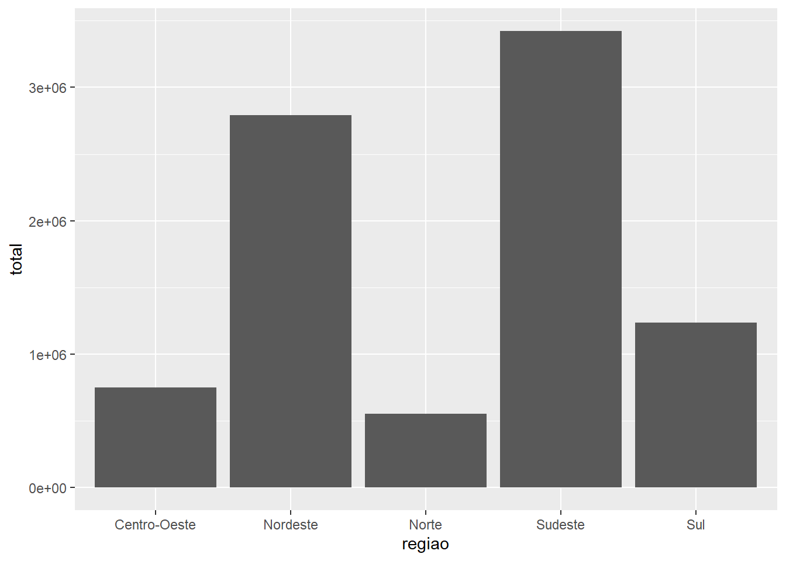
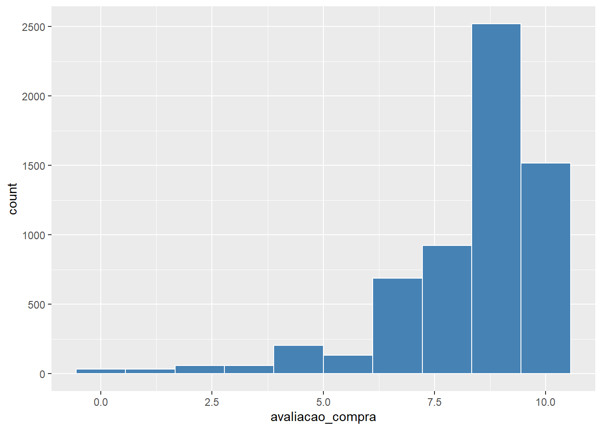
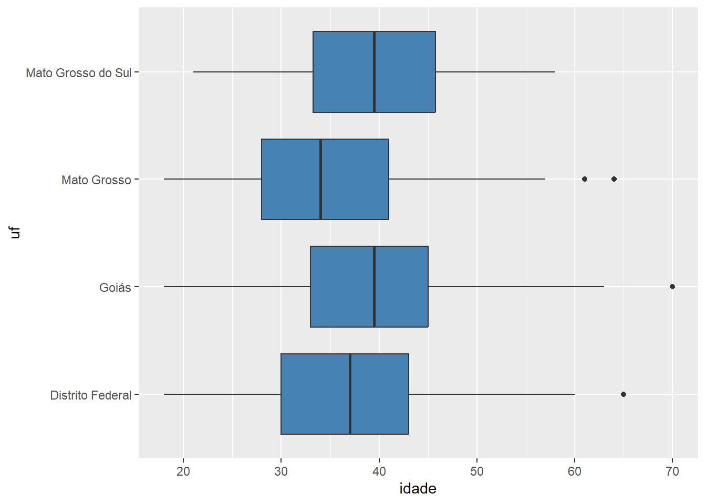
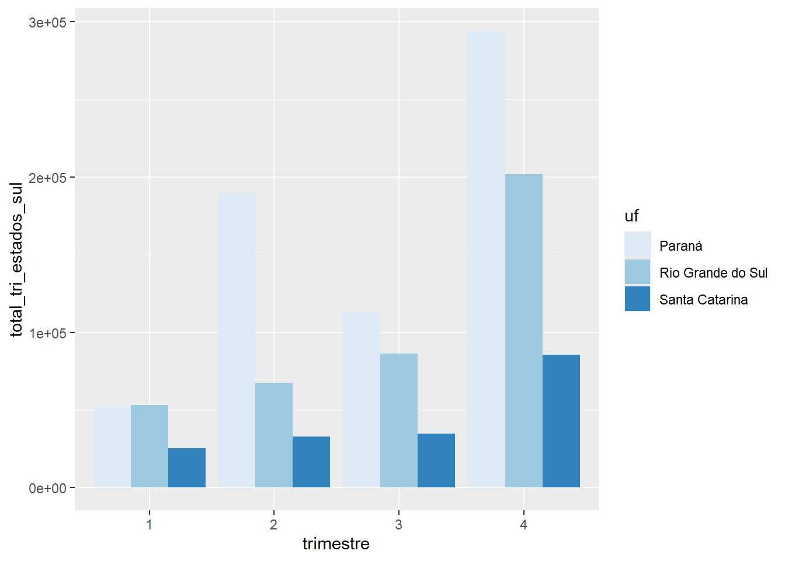
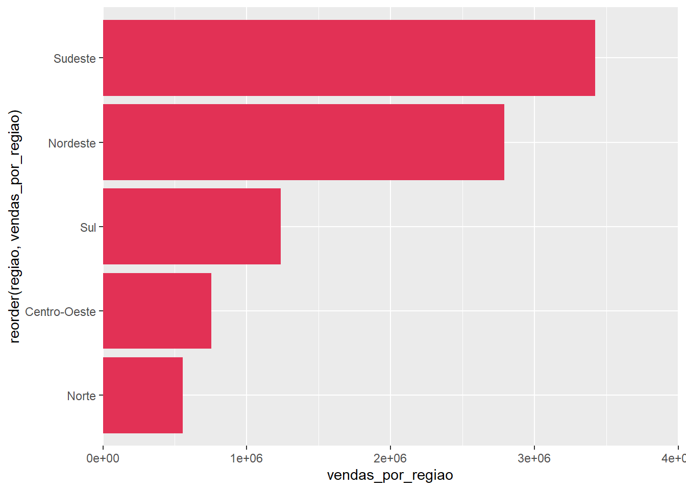
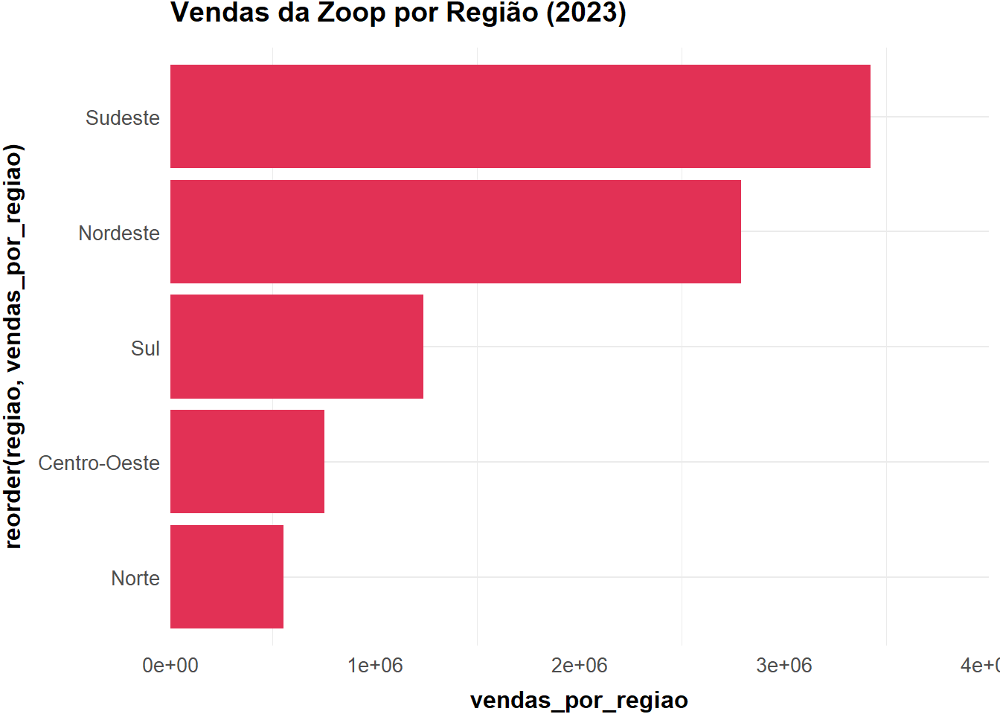
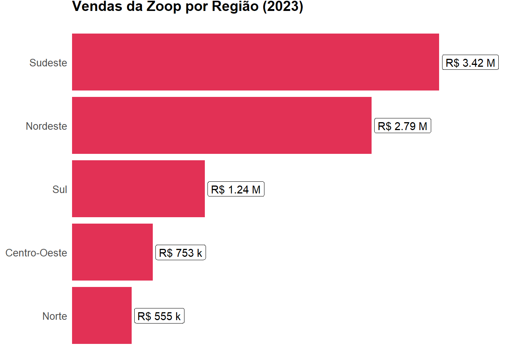
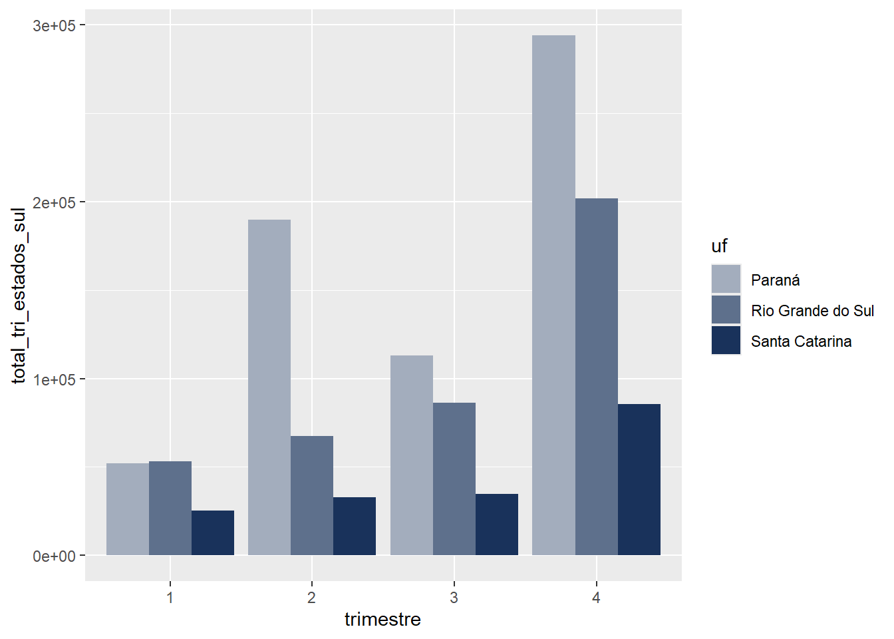
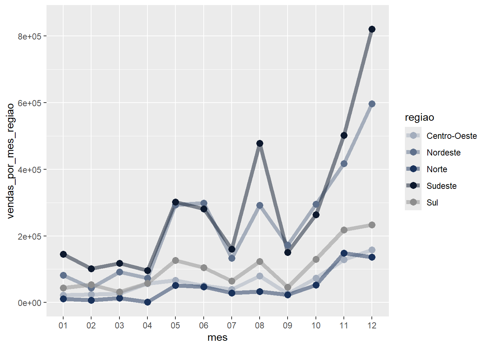
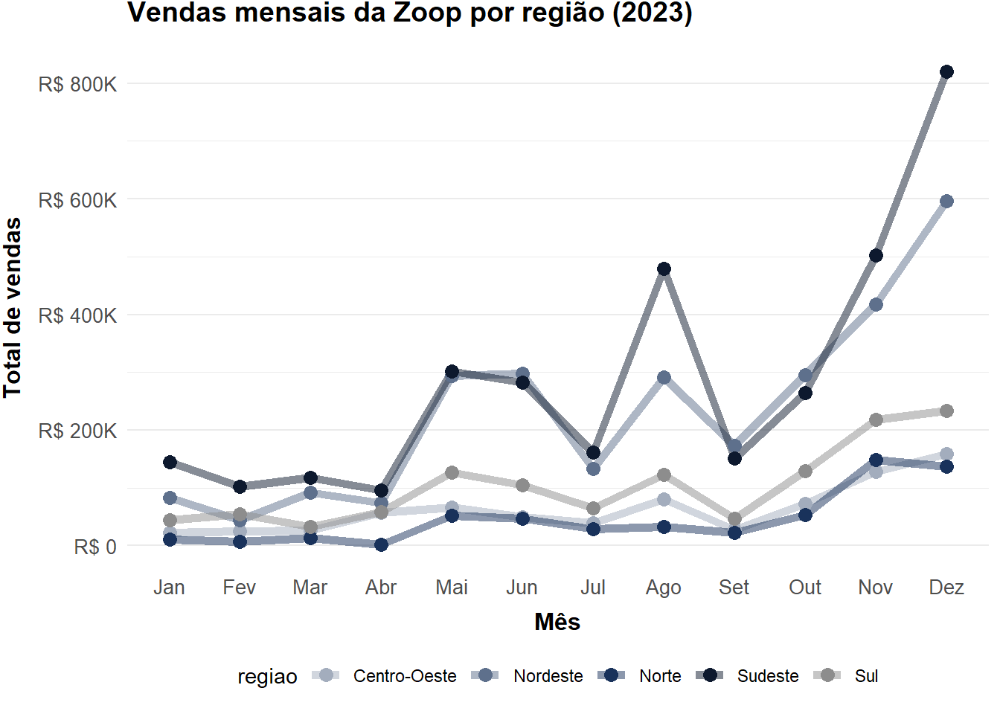

Mão na massa: Aplicando Data Visualization com ggplot2
Sobre o documento
Aproveite esse espaço para as atividades Mão na Massa do curso de R: Aplicando Data Visualization com ggplot2 da Alura. Aqui você pode escrever e testar os códigos dos diversos desafios envolvendo os aprendizados de cada aula.
Este arquivo Quarto foi construído com espaço para as células das atividades propostas no curso, com ele você tem espaço para construir e executar suas soluções
Além desse documento, vamos trabalhar com os arquivos CSV das bases de clientes e vendas da Zoop assim como nos vídeos do nosso curso. Essas bases estão na pasta dados do projeto. Lembrando que este Quarto precisa estar na pasta raiz do projeto para a execução dos códigos base que deixaremos logo abaixo.
Pacotes do projeto
Aula 01 - Conhecendo os dados
Vamos iniciar o nosso processo de obtenção de arquivos extraindo os dados dos arquivos .csvque foram compartilhados conosco. Com o caminho das bases, passaremos cada uma para uma variável e por fim, agruparemos os dados em um única DataFrame pelo ID da compra para facilitar nossas análises.
Qual o faturamento das vendas por região do Brasil em 2023?
ggplot(dados_completos, aes(x = regiao, y = total)) +geom_col()

Aula 02 - Explorando dados dos clientes
Gerando 1º visual
Qual a distribuição das avaliações dos clientes nas compras do e-commerce da Zoop?
Cada compra é diferente, portanto não é necessário filtrar para clientes únicos.
ggplot(dados_completos, aes(avaliacao_compra)) +geom_histogram(bins =10, fill ="steelblue", color ="white")

Insights
Escreva aqui o que conseguiu interpretar com esse visual…
Gerando 2º visual
Qual a distribuição das avaliações dos clientes da Zoop por estado na Região Nordeste?
dados_completos %>%filter(regiao =="Centro-Oeste") %>%ggplot() +geom_boxplot(aes(x = idade, y = uf, fill = regiao), fill ="steelblue")

Insights
Escreva aqui o que conseguiu interpretar com esse visual…
Aula 03 - Explorando dados das vendas
Gerando 1º visual
Qual o faturamento das vendas por região do Brasil em 2023? Ajuste o visual para ordenar dados, definir limites e colocá-lo como um gráfico de barras horizontais.
Escreva aqui o que conseguiu interpretar com esse visual…
Gerando 2º visual
Qual o faturamento mensal das vendas da Zoop por região em 2023? Como as vendas performaram no Nordeste em relação a todas as outras regiões?
Lembre-se de adicionar no gráfico de linhas o parâmetro group para separar as regiões em diferentes linhas e o color para colorir cada reta individualmente
`summarise()` has grouped output by 'trimestre'. You can override using the
`.groups` argument.
vendas_por_tri_estados_sul
# A tibble: 12 × 3
# Groups: trimestre [4]
trimestre uf total_tri_estados_sul
<fct> <fct> <dbl>
1 1 Paraná 51958.
2 1 Rio Grande do Sul 53005.
3 1 Santa Catarina 25212.
4 2 Paraná 189864.
5 2 Rio Grande do Sul 67648.
6 2 Santa Catarina 32755.
7 3 Paraná 113129.
8 3 Rio Grande do Sul 86432.
9 3 Santa Catarina 34841.
10 4 Paraná 293870.
11 4 Rio Grande do Sul 201747.
12 4 Santa Catarina 85607.
Criando o visual
ggplot(vendas_por_tri_estados_sul, aes(trimestre, total_tri_estados_sul, fill = uf)) +geom_col(position ="dodge") +scale_fill_brewer(palette ="Blues")

Insights
Escreva aqui o que conseguiu interpretar com esse visual…
Aula 04 - Personalizando os visuais
Definindo o tema base dos visuais
Paleta de cores da Zoop
red_1
red_2
red_3
grey_1
grey_2
grey_3
blue_1
blue_2
blue_3
blue_4
#ee8399
#e23155
#881d33
#f3f3f3
#ebebeb
#8d8d8d
#a3adbd
#5e708c
#19325b
#0d192e
O código abaixo salva os valores hexadecimais das cores em cada variável com o código da cor
tema <-theme_minimal() +theme(panel.grid.major.x =element_blank(),plot.title =element_text(size=14, face="bold", vjust =+3),axis.text =element_text(size =10),axis.title.x =element_text(size =12, face ="bold", vjust =-1),axis.title.y =element_text(size =12, face ="bold", vjust =+3),legend.position ="bottom")
Refinando o 1º Visual
Gráfico base
Adicione o gráfico de Faturamento por região gerado na Aula 03 e lembre-se de aplicar uma das cores da paleta no argumento fill do elemento gráfico geom_col() .
# Cole Aqui o código do Visual gerado de: Faturamento por região em 2023 # do Mão na Massa da Aula 03g_vendas_por_regiao <-ggplot(vendas_por_regiao, aes(x =reorder(regiao, vendas_por_regiao), y = vendas_por_regiao)) +geom_col(fill = red_2) +scale_y_continuous(expand =c(0,0), limits =c(0, 4e6)) +coord_flip()g_vendas_por_regiao

Adicionando tema e título
g_vendas_por_regiao <- g_vendas_por_regiao + tema +labs(title ="Vendas da Zoop por Região (2023)")g_vendas_por_regiao

Adicionando labels no visual
Seguindo os passos anteriores corretamente, a tabela das vendas por região já estará resumida, portanto não será necessário realizar um cálculo estatístico para pegar o valor de vendas. E podemos usar o geom_label() diretamente com a função number() do scales
# Rode o código após as outras etapas para finalizar o visualg_vendas_por_regiao <- g_vendas_por_regiao +theme(panel.grid =element_blank(),axis.title.x =element_blank(),axis.title.y =element_blank(),axis.text.x =element_blank())g_vendas_por_regiao

Refinando o 2º Visual
Gráfico base
Adicione o gráfico de Faturamento da Região Sul por trimestre gerado na Aula 03. Lembre-se de adicionar manualmente a paleta para o grupo das 3 colunas descritas abaixo
cores <-c(blue_1, blue_2, blue_3)
# Cole Aqui o código do Visual gerado de: Faturamento da Região Sul por trimestre em 2023 # do Mão na Massa da Aula 03g_vendas_por_tri_estados_sul <-ggplot(vendas_por_tri_estados_sul,aes(trimestre, total_tri_estados_sul, fill = uf)) +geom_col(position ="dodge") +scale_fill_manual(values = cores)g_vendas_por_tri_estados_sul

Adicionando tema e títulos
g_vendas_por_tri_estados_sul <- g_vendas_por_tri_estados_sul + tema +labs(title ="Vendas trimestrais da Zoop na Região Sul (2023)",x ="", y ="Total de vendas", fill ="Estado")g_vendas_por_tri_estados_sul
Adicione o gráfico de Faturamento mensal por região gerado na Aula 03. Lembre-se de adicionar manualmente a paleta para o grupo das 5 linhas do gráfico.
cores <-c(blue_1, blue_2, blue_3, blue_4, grey_3)
# Cole Aqui o código do Visual gerado de: Faturamento mensal por região em 2023 # do Mão na Massa da Aula 03g_vendas_por_mes_regiao <-ggplot(vendas_por_mes_regiao,aes(x = mes, y = vendas_por_mes_regiao,group=regiao, color=regiao)) +geom_line(linewidth =2, alpha =0.5) +geom_point(size =3) +ylim(0,8.5e5) +scale_color_manual(values = cores)g_vendas_por_mes_regiao

Adicionando tema e títulos
g_vendas_por_mes_regiao <- g_vendas_por_mes_regiao + tema +labs(title ="Vendas mensais da Zoop por região (2023)",x ="Mês", y ="Total de vendas", fill ="Região")g_vendas_por_mes_regiao
Scale for y is already present.
Adding another scale for y, which will replace the existing scale.
g_vendas_por_mes_regiao

Adicionando anotações no visual
Para te ajudar na criação das anaotações, este link traz ótimos exemplos de como construir visuais atrativos com ggplot2.
g_vendas_por_mes_regiao <- g_vendas_por_mes_regiao +annotate("text", x =8, y =7.2e5, vjust =1, size =3.5,label ="As vendas no Nordeste superaram as do\nSudeste nos meses de Jun e Out de 2023") +annotate("curve", x =8, y =6e5, xend =6, yend =3e5,arrow =arrow(length =unit(2, "mm"))) +annotate("curve", x =8, y =6e5, xend =10, yend =3e5,arrow =arrow(length =unit(2, "mm")), curvature =-0.5)g_vendas_por_mes_regiao
Com as visualizações de dados salvas que tal renderizar todo esse documento e/ou criar um relatório e apresentação para escrever suas impressões?
Você pode acessar, por exemplo, esta aula do curso de IA aplicada a Data Science: utilizando IA como assistente na construção de visualização de dados aqui da Alura que ensina a utilizar a IA do Gamma.app que é uma ferramenta online que cria slides para apresentações de maneira prática e fácil, baseada em Inteligência Artificial (IA).